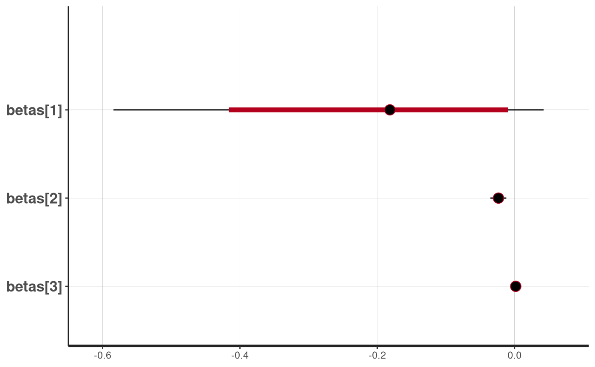

artemis
modeling.Rmdlibrary(artemis)
A primary purpose of the artemis package is to facilitate modeling of qPCR data from eDNA samples. It does this via two functions: eDNA_lm() for fixed effects models and eDNA_lmer() for mixed effects models.
The underlying Stan models are pre-compiled in the package, but can be found in the artemis source code here.
Both modeling functions require the following inputs:
A vector of numeric Cq values (one for each qPCR replicate). Cq values corresponding to non-detections for your assay should be recorded as the threshold value (the default is 40.0 cycles).
The intercept value \(\alpha\) and the slope value \(\beta\) from a standard curve equation associated with the qPCR analysis.
An example of qPCR data in the correct format for modeling with artemis can be viewed by calling eDNA_data, which is a dataframe with Cq values from live car experiments completed in the California Sacramento-San Joaquin Delta with Delta Smelt:
head(eDNA_data) #> Date SampleID TechnicalRep FilterNumber Distance Volume Cq #> 1 2019-01-24 1 1 1 0 20 34.47658 #> 2 2019-01-24 1 2 1 0 20 33.90252 #> 3 2019-01-24 1 3 1 0 20 34.41304 #> 4 2019-01-24 1 4 1 0 20 34.30393 #> 5 2019-01-24 1 5 1 0 20 34.85147 #> 6 2019-01-24 1 6 1 0 20 34.40556 str(eDNA_data) #> 'data.frame': 732 obs. of 7 variables: #> $ Date : Date, format: "2019-01-24" "2019-01-24" ... #> $ SampleID : int 1 1 1 1 1 1 1 1 2 2 ... #> $ TechnicalRep: num 1 2 3 4 5 6 7 8 1 2 ... #> $ FilterNumber: num 1 1 1 1 1 1 1 1 2 2 ... #> $ Distance : num 0 0 0 0 0 0 0 0 0 0 ... #> $ Volume : num 20 20 20 20 20 20 20 20 20 20 ... #> $ Cq : num 34.5 33.9 34.4 34.3 34.9 ...
As the sample data is just a subset, it’s a bit unbalanced - some variable levels are associated with 15 replicate filters and 8 technical replicates per filter, while others have 5 replicate filters with 12 technical replicates, and the distribution of technical replicates across variable levels is uneven:
table(eDNA_data$FilterNumber, eDNA_data$TechnicalRep) #> #> 1 2 3 4 5 6 7 8 9 10 11 12 #> 1 11 11 11 11 11 11 11 11 9 9 9 9 #> 2 12 12 12 12 12 12 12 12 9 9 9 9 #> 3 12 12 12 12 12 12 12 12 9 9 9 9 #> 4 12 12 12 12 12 12 12 12 9 9 9 9 #> 5 12 12 12 12 12 12 12 12 9 9 9 9 #> 6 1 1 1 1 1 1 1 1 0 0 0 0 #> 7 1 1 1 1 1 1 1 1 0 0 0 0 #> 8 1 1 1 1 1 1 1 1 0 0 0 0 #> 9 1 1 1 1 1 1 1 1 0 0 0 0 #> 10 1 1 1 1 1 1 1 1 0 0 0 0 #> 11 1 1 1 1 1 1 1 1 0 0 0 0 #> 12 1 1 1 1 1 1 1 1 0 0 0 0 #> 13 1 1 1 1 1 1 1 1 0 0 0 0 #> 14 1 1 1 1 1 1 1 1 0 0 0 0 #> 15 1 1 1 1 1 1 1 1 0 0 0 0 table(eDNA_data$Volume, eDNA_data$Distance) #> #> 0 150 300 #> 20 100 60 60 #> 50 212 60 60 #> 100 60 60 60
The models handle this, as long as there are no variable levels with missing or NA values - Stan models do not take NA values, and any rows with NAs in the data will be dropped in the construction of the model matrix when the data is prepped for modeling.
eDNA_lm()
To fit a fixed effects model to the sample eDNA_data where Distance is the only predictor, we give the function a model formula and the input data listed above:
model_fit = eDNA_lm(Cq ~ Distance, data = eDNA_data, std_curve_alpha = 21.2, std_curve_beta = -1.5)
The model functions will add an intercept term, but you can explicitly omit the intercept if you have a good reason for doing so. Full control of the MCMC algorithm can be accomplished by adding these control arguments to the end of the eDNA_lm*() call, which then passes them on to rstan::stan(). For example,
model_fit = eDNA_lm(Cq ~ Distance, data = eDNA_data, std_curve_alpha = 21.2, std_curve_beta = -1.5, iter = 500, seed = 1234, n_chain = 1) # we don't recommend sampling just 1 chain; the default is 4
By default, artemis suppresses the (often verbose) output from Stan, but users can (and should) enable it with verbose = TRUE when the model is sampling slowly or the output suggests the MCMC algorithm might not have converged, for example,
model_fit = eDNA_lm(Cq ~ Distance + Volume + Distance*Volume, data = eDNA_data, std_curve_alpha = 21.2, std_curve_beta = -1.5, iter = 500, seed = 1234, n_chain = 1, # set to 1 for vignette; default is 4 verbose = TRUE) #> Model executable is up to date! #> Running MCMC with 1 chain(s) on 1 core(s)... #> #> Running ./eDNA_omni 'id=1' random 'seed=1234' data \ #> 'file=/tmp/Rtmp77uw1C/standata-10ed22454ec11.json' output \ #> 'file=/tmp/Rtmp77uw1C/eDNA_omni-202006231346-1-dc65e9.csv' 'method=sample' \ #> 'save_warmup=0' 'algorithm=hmc' 'engine=nuts' adapt 'engaged=1' #> Chain 1 Rejecting initial value: #> Chain 1 Gradient evaluated at the initial value is not finite. #> Chain 1 Stan can't start sampling from this initial value. #> Chain 1 Gradient evaluation took 0.000108 seconds #> Chain 1 1000 transitions using 10 leapfrog steps per transition would take 1.08 seconds. #> Chain 1 Adjust your expectations accordingly! #> Chain 1 Iteration: 1 / 2000 [ 0%] (Warmup) #> Chain 1 Informational Message: The current Metropolis proposal is about to be rejected because of the following issue: #> Chain 1 Exception: normal_lpdf: Scale parameter[1] is 0, but must be > 0! (in '/tmp/RtmpGK0qHi/model-e18d6ef39c68.stan', line 231, column 1 to line 234, column 40) #> Chain 1 If this warning occurs sporadically, such as for highly constrained variable types like covariance matrices, then the sampler is fine, #> Chain 1 but if this warning occurs often then your model may be either severely ill-conditioned or misspecified. #> Chain 1 #> Chain 1 Iteration: 100 / 2000 [ 5%] (Warmup) #> Chain 1 Iteration: 200 / 2000 [ 10%] (Warmup) #> Chain 1 Iteration: 300 / 2000 [ 15%] (Warmup) #> Chain 1 Iteration: 400 / 2000 [ 20%] (Warmup) #> Chain 1 Iteration: 500 / 2000 [ 25%] (Warmup) #> Chain 1 Iteration: 600 / 2000 [ 30%] (Warmup) #> Chain 1 Iteration: 700 / 2000 [ 35%] (Warmup) #> Chain 1 Iteration: 800 / 2000 [ 40%] (Warmup) #> Chain 1 Iteration: 900 / 2000 [ 45%] (Warmup) #> Chain 1 Iteration: 1000 / 2000 [ 50%] (Warmup) #> Chain 1 Iteration: 1001 / 2000 [ 50%] (Sampling) #> Chain 1 Iteration: 1100 / 2000 [ 55%] (Sampling) #> Chain 1 Iteration: 1200 / 2000 [ 60%] (Sampling) #> Chain 1 Iteration: 1300 / 2000 [ 65%] (Sampling) #> Chain 1 Iteration: 1400 / 2000 [ 70%] (Sampling) #> Chain 1 Iteration: 1500 / 2000 [ 75%] (Sampling) #> Chain 1 Iteration: 1600 / 2000 [ 80%] (Sampling) #> Chain 1 Iteration: 1700 / 2000 [ 85%] (Sampling) #> Chain 1 Iteration: 1800 / 2000 [ 90%] (Sampling) #> Chain 1 Iteration: 1900 / 2000 [ 95%] (Sampling) #> Chain 1 Iteration: 2000 / 2000 [100%] (Sampling) #> Chain 1 finished in 36.4 seconds. #> 243 of 1000 (24.0%) transitions ended with a divergence. #> These divergent transitions indicate that HMC is not fully able to explore the posterior distribution. #> Try increasing adapt delta closer to 1. #> If this doesn't remove all divergences, try to reparameterize the model.
eDNA_lmer()
To fit a model with one or more random effect(s), use the eDNA_lmer() function. Random effects are specified using the same syntax as the lme4 package, e.g. (1|random effect):
d = eDNA_data # create a copy to modify d$Year = factor(sample(2018:2020, size = nrow(d), replace = TRUE)) # create a random variable model_fit2 = eDNA_lmer(Cq ~ Distance + Volume + (1|Year), data = d, std_curve_alpha = 21.2, std_curve_beta = -1.5, iter = 1000, seed = 1234, n_chain = 1) # set to 1 for vignette; default is 4 #> Model executable is up to date! #> Running MCMC with 1 chain(s) on 1 core(s)... #> #> Running ./eDNA_omni 'id=1' random 'seed=1234' data \ #> 'file=/tmp/Rtmp77uw1C/standata-10ed25ee170e3.json' output \ #> 'file=/tmp/Rtmp77uw1C/eDNA_omni-202006231347-1-5e9064.csv' 'method=sample' \ #> 'save_warmup=0' 'algorithm=hmc' 'engine=nuts' adapt 'engaged=1' #> Chain 1 Rejecting initial value: #> Chain 1 Gradient evaluated at the initial value is not finite. #> Chain 1 Stan can't start sampling from this initial value. #> Chain 1 Rejecting initial value: #> Chain 1 Gradient evaluated at the initial value is not finite. #> Chain 1 Stan can't start sampling from this initial value. #> Chain 1 Rejecting initial value: #> Chain 1 Gradient evaluated at the initial value is not finite. #> Chain 1 Stan can't start sampling from this initial value. #> Chain 1 Rejecting initial value: #> Chain 1 Gradient evaluated at the initial value is not finite. #> Chain 1 Stan can't start sampling from this initial value. #> Chain 1 Rejecting initial value: #> Chain 1 Gradient evaluated at the initial value is not finite. #> Chain 1 Stan can't start sampling from this initial value. #> Chain 1 Rejecting initial value: #> Chain 1 Gradient evaluated at the initial value is not finite. #> Chain 1 Stan can't start sampling from this initial value. #> Chain 1 Rejecting initial value: #> Chain 1 Gradient evaluated at the initial value is not finite. #> Chain 1 Stan can't start sampling from this initial value. #> Chain 1 Rejecting initial value: #> Chain 1 Gradient evaluated at the initial value is not finite. #> Chain 1 Stan can't start sampling from this initial value. #> Chain 1 Rejecting initial value: #> Chain 1 Gradient evaluated at the initial value is not finite. #> Chain 1 Stan can't start sampling from this initial value. #> Chain 1 Gradient evaluation took 0.00013 seconds #> Chain 1 1000 transitions using 10 leapfrog steps per transition would take 1.3 seconds. #> Chain 1 Adjust your expectations accordingly! #> Chain 1 Iteration: 1 / 2000 [ 0%] (Warmup) #> Chain 1 Iteration: 100 / 2000 [ 5%] (Warmup) #> Chain 1 Iteration: 200 / 2000 [ 10%] (Warmup) #> Chain 1 Iteration: 300 / 2000 [ 15%] (Warmup) #> Chain 1 Iteration: 400 / 2000 [ 20%] (Warmup) #> Chain 1 Iteration: 500 / 2000 [ 25%] (Warmup) #> Chain 1 Iteration: 600 / 2000 [ 30%] (Warmup) #> Chain 1 Iteration: 700 / 2000 [ 35%] (Warmup) #> Chain 1 Iteration: 800 / 2000 [ 40%] (Warmup) #> Chain 1 Iteration: 900 / 2000 [ 45%] (Warmup) #> Chain 1 Iteration: 1000 / 2000 [ 50%] (Warmup) #> Chain 1 Iteration: 1001 / 2000 [ 50%] (Sampling) #> Chain 1 Iteration: 1100 / 2000 [ 55%] (Sampling) #> Chain 1 Iteration: 1200 / 2000 [ 60%] (Sampling) #> Chain 1 Iteration: 1300 / 2000 [ 65%] (Sampling) #> Chain 1 Iteration: 1400 / 2000 [ 70%] (Sampling) #> Chain 1 Iteration: 1500 / 2000 [ 75%] (Sampling) #> Chain 1 Iteration: 1600 / 2000 [ 80%] (Sampling) #> Chain 1 Iteration: 1700 / 2000 [ 85%] (Sampling) #> Chain 1 Iteration: 1800 / 2000 [ 90%] (Sampling) #> Chain 1 Iteration: 1900 / 2000 [ 95%] (Sampling) #> Chain 1 Iteration: 2000 / 2000 [100%] (Sampling) #> Chain 1 finished in 14.5 seconds.
As with the simulation objects, the model results can be summarized or plotted with default methods using summary() and plot(), or converted to a dataframe object for further manipulation.
summary(model_fit) #> Mean 2.5% 50% 97.5% #> (Intercept) -8.243044000 -8.9266227500 -8.24683000 -7.563142500 #> Distance -0.195759326 -0.5841760750 -0.18163250 0.042323602 #> Volume -0.023458332 -0.0352484225 -0.02344330 -0.012040983 #> Distance:Volume 0.001833357 -0.0005449688 0.00167908 0.005613525 #> Cq_sigma 3.156783090 2.8931740000 3.15775500 3.422422500 plot(model_fit, pars = c(sprintf("betas[%d]", 1:3))) #> ci_level: 0.8 (80% intervals) #> outer_level: 0.95 (95% intervals)

Matching lme4 convention, random effects are not included in the default summary() output. You can view or plot the random effects estimates by subsetting the stanfit slot of the model object with @, and specifying the random_betas parameters with the pars argument:
summary(model_fit2@stanfit, pars = "rand_betas", probs = c(0.50, 0.025, 0.975))$summary plot(model_fit2@stanfit, pars = "rand_betas")
Because the models implemented in artemis are Bayesian, you will get the most out of their results when you can work with and summarize posterior probabilities. Some helpful resources for this are the Stan User’s Guide, and the stanfit objects vignette from the rstan package.